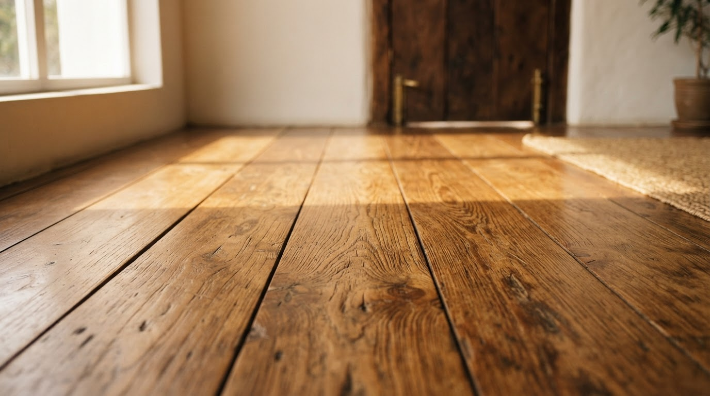
Restauração
01
Revelar a beleza de novo
Para pisos com desgaste, riscos ou acabamento comprometido. A avaliação indica se é possível recuperar a superfície e renovar sua proteção.
Recupere a beleza da madeira que já faz parte da sua casa. Restauração e revitalização com Daniel Laranjeira, do primeiro contato à avaliação do seu piso.
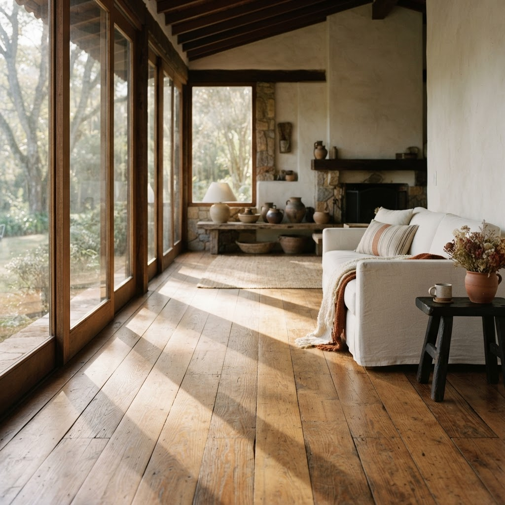
Acolhimento começa pelo chão.
AMBIENTE ILUSTRATIVONem todo piso precisa da mesma intervenção. Primeiro, entender a madeira. Depois, indicar o caminho adequado.

Para pisos com desgaste, riscos ou acabamento comprometido. A avaliação indica se é possível recuperar a superfície e renovar sua proteção.
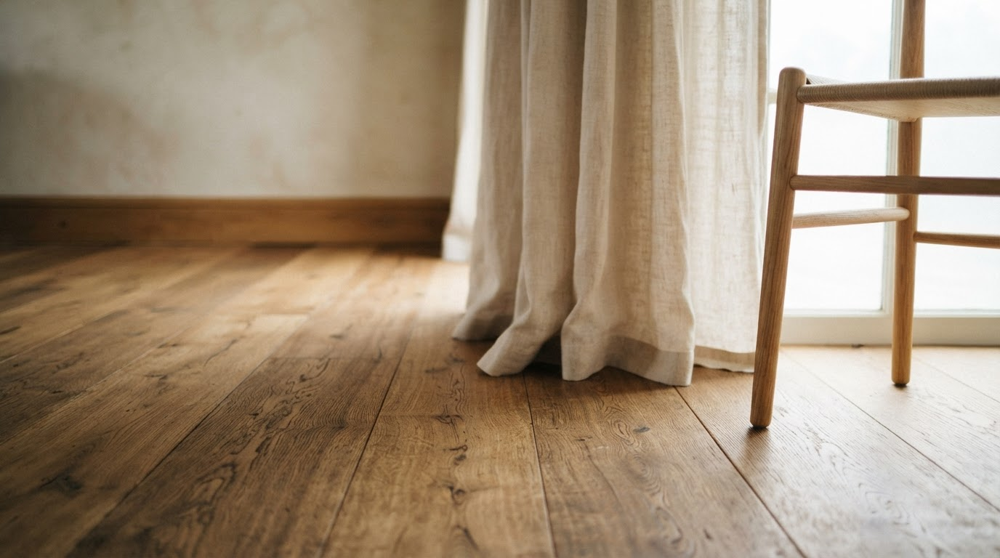
Uma possibilidade para renovar o aspecto de pisos que ainda estão em boas condições. O cuidado adequado depende do estado da madeira e do acabamento atual.
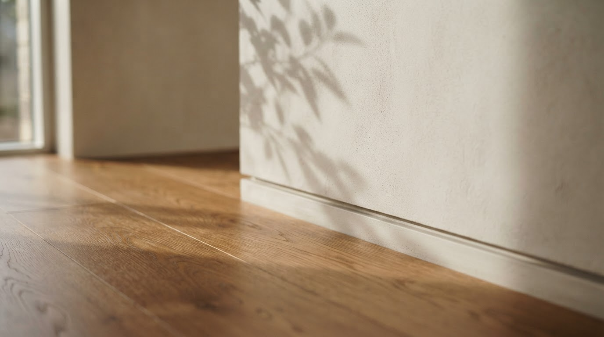
Orientação sobre opções de acabamento e proteção compatíveis com o piso. A escolha considera a aparência desejada, o ambiente e a rotina da casa.
Inspirações para perceber a presença da madeira nos ambientes. Cada piso tem uma condição e precisa de avaliação própria.
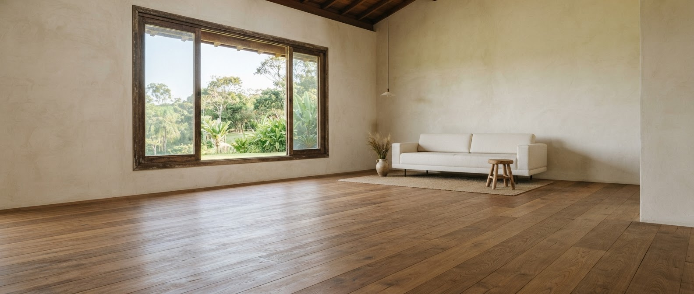
Antes · simulação Depois · simulaçãoComparação conceitual de acabamento no mesmo ambiente. Não representa obra executada nem garantia de resultado.
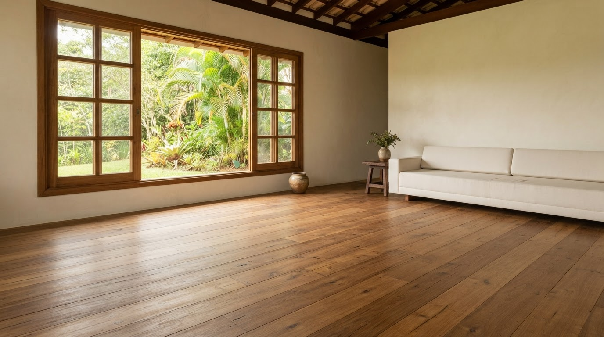
A madeira como protagonista
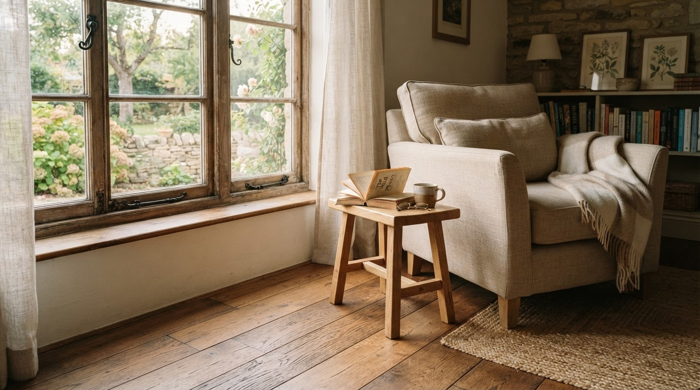
Textura e tons que aquecem
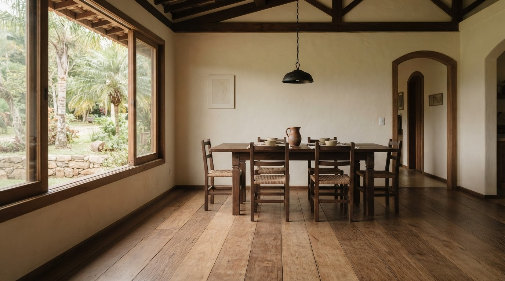
Beleza no espaço de conviver
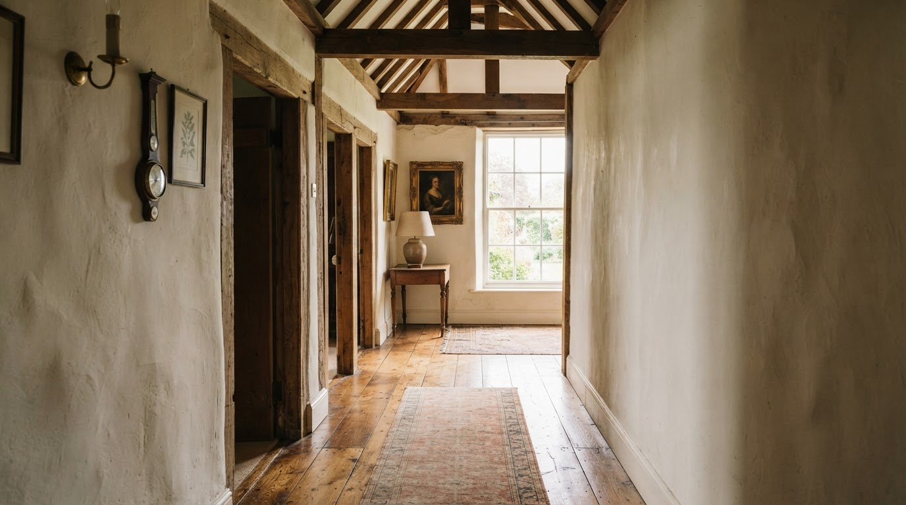
Continuidade entre ambientes
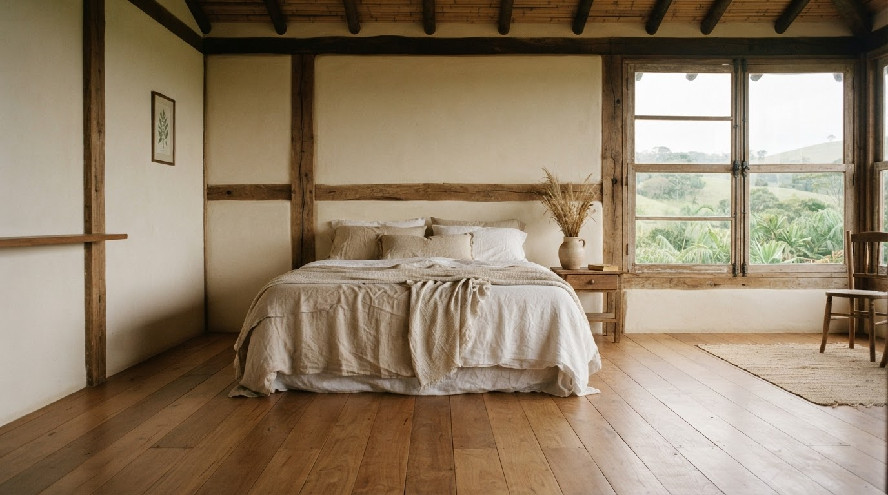
Conforto que se sente
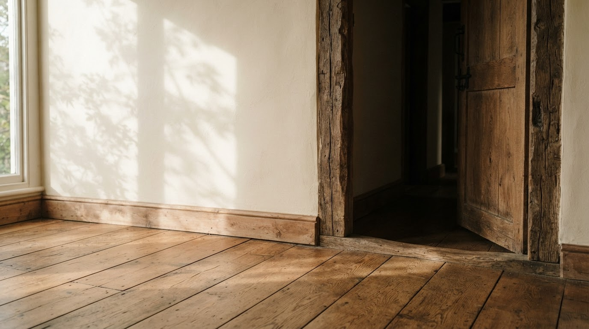
O desenho natural da madeira
Envie fotos pelo WhatsApp e conte onde fica o imóvel. Se puder, mostre o ambiente inteiro e os detalhes do desgaste.
Converse com Daniel sobre o estado da madeira e o que você deseja. Uma avaliação presencial pode ser necessária.
Com a avaliação, alinhe o serviço indicado, os cuidados, o valor e as condições antes de decidir como seguir.